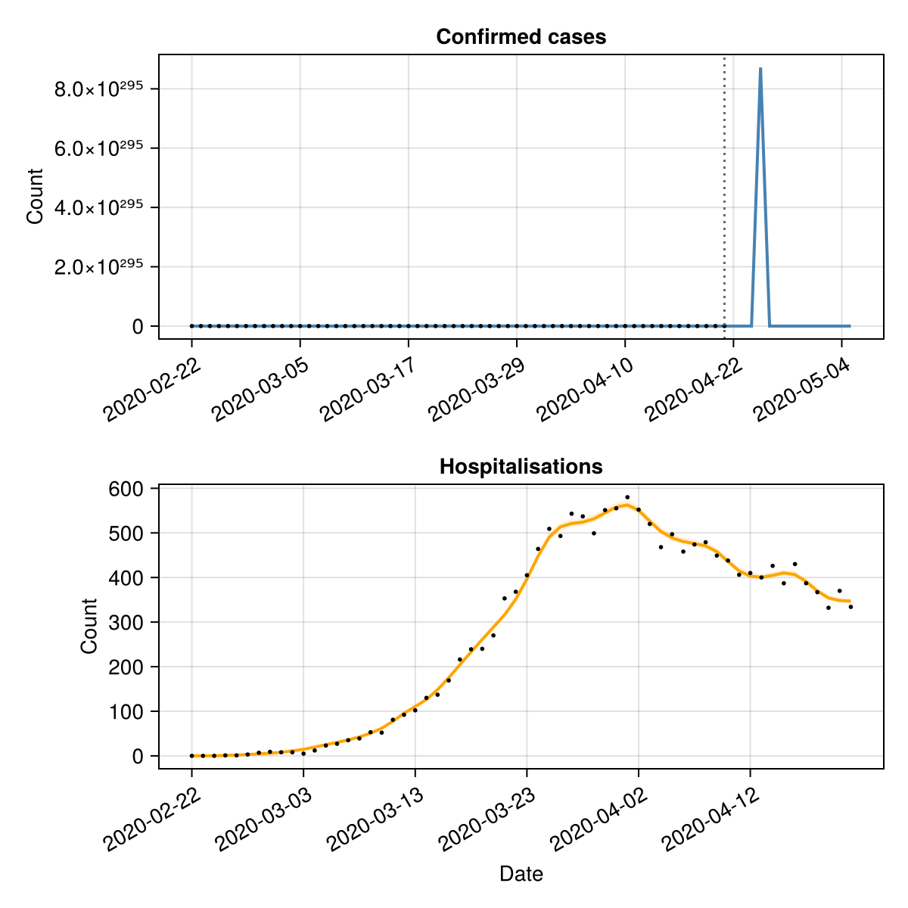

Forecasting multiple data streams
This tutorial demonstrates how to use EpiNow2.jl to forecast multiple epidemiological outcomes — for example, cases and hospitalisations — by combining estimate_infections() with estimate_secondary().
Setup
using EpiNow2
using CSV, DataFrames, Dates, Distributions, Statistics, Random
using CairoMakie
Random.seed!(6789)Data
We use the example case data and simulate a hospitalisation time series, assuming 10% of cases are hospitalised with a log-normal delay (mean ~7 days).
pkgdir = dirname(dirname(pathof(EpiNow2)))
cases_df = CSV.read(
joinpath(pkgdir, "test", "reference", "example_confirmed_full.csv"),
DataFrame
)
cases_df.date = Date.(cases_df.date)
cases_df = first(cases_df, 60)
# Simulate hospitalisations: 10% of cases with a lognormal delay
primary = DataFrame(date=cases_df.date, primary=cases_df.confirm)
hosp = simulate_secondary(
primary;
delays = delay_opts(LogNormal(1.6, 0.5)),
frac = 0.1
)
df = DataFrame(
date = cases_df.date,
cases = cases_df.confirm,
hospitalisations = hosp.secondary
)
first(df, 6)| Row | date | cases | hospitalisations |
|---|---|---|---|
| Date | Int64 | Int64 | |
| 1 | 2020-02-22 | 14 | 0 |
| 2 | 2020-02-23 | 62 | 0 |
| 3 | 2020-02-24 | 53 | 0 |
| 4 | 2020-02-25 | 97 | 1 |
| 5 | 2020-02-26 | 93 | 1 |
| 6 | 2020-02-27 | 78 | 3 |
fig = Figure(size=(600, 300))
ax = Axis(fig[1, 1]; xlabel="Date", ylabel="Count")
date_nums = Dates.value.(df.date .- df.date[1])
lines!(ax, date_nums, Float64.(df.cases); label="Cases")
lines!(ax, date_nums, Float64.(df.hospitalisations); label="Hospitalisations")
tick_step = max(1, nrow(df) ÷ 6)
ax.xticks = (date_nums[1:tick_step:end], string.(df.date[1:tick_step:end]))
ax.xticklabelrotation = π/6
axislegend(ax; position=:lt)
fig
Estimating infections
We first estimate infections and forecast cases using estimate_infections(). We use the confirmed cases and specify the generation time, incubation period, and reporting delay.
generation_time = UncertainDistribution(
(shape, rate) -> Gamma(max(1e-6, shape), max(1e-6, 1 / rate)),
[truncated(Normal(1.4, 0.48); lower=0.01),
truncated(Normal(0.38, 0.25); lower=0.01)],
14.0
)
incubation_period = UncertainDistribution(
(μ, σ) -> LogNormal(μ, σ),
[Normal(1.62, 0.064), truncated(Normal(0.418, 0.069); lower=0.01)],
14.0
)
reporting_delay = LogNormal(0.5, 0.5)
delay = incubation_period + reporting_delay
est = estimate_infections(
rename(df[!, [:date, :cases]], :cases => :confirm);
generation_time = gt_opts(generation_time),
delays = delay_opts(discretise(delay)),
forecast = forecast_opts(horizon=14),
inference = inference_opts(samples=500, warmup=250, chains=1),
verbose=false
)
estEpiNow2 estimate_infections result
Data: 60 days (2020-02-22 to 2020-04-21)
Forecast: 14 days
Timing: 1167.4s
Latest Rt: 6.7289846526391576e16 (90% CrI: 6.72891263164198e16-6.7290334486952376e16)
Latest infections: 0.0 (90% CrI: 0.0-0.0)
Latest reports: 0.0 (90% CrI: 0.0-0.0)
Estimating the secondary relationship
We use estimate_secondary() to learn the delay and scaling between cases and hospitalisations.
sec_data = DataFrame(
date = df.date,
primary = df.cases,
secondary = df.hospitalisations
)
sec = estimate_secondary(
sec_data;
delays = delay_opts(LogNormal(1.6, 0.5)),
obs = obs_opts(week_effect=false),
inference = inference_opts(samples=500, warmup=250, chains=1),
burn_in=14,
verbose=false
)
secEpiNow2.EstimateSecondaryResult(EpiNow2.EpiNow2Fit{EpiNow2.SecondaryMetadata, @NamedTuple{expected::Vector{Float64}}}(MCMC chain (500×16×1 Array{Union{Missing, Float64}, 3}), [(expected = [0.00028283855201929143, 0.04077225001818914, 0.44292157492697354, 1.865961915192653, 4.257519576337977, 7.385756507301649, 10.841396024929454, 14.230336608265153, 19.446867772393045, 26.998802715909875 … 982.2728306004857, 975.8117186582908, 986.3599514754991, 999.8297409596306, 990.4099596403978, 952.3899163860358, 900.4701514103077, 862.7459832534593, 848.7925450278408, 845.476128488265],), (expected = [0.00028283855201929143, 0.04077225001818914, 0.44292157492697354, 1.865961915192653, 4.257519576337977, 7.385756507301649, 10.841396024929454, 14.230336608265153, 19.446867772393045, 26.998802715909875 … 982.2728306004857, 975.8117186582908, 986.3599514754991, 999.8297409596306, 990.4099596403978, 952.3899163860358, 900.4701514103077, 862.7459832534593, 848.7925450278408, 845.476128488265],), (expected = [0.00028283855201929143, 0.04077225001818914, 0.44292157492697354, 1.865961915192653, 4.257519576337977, 7.385756507301649, 10.841396024929454, 14.230336608265153, 19.446867772393045, 26.998802715909875 … 982.2728306004857, 975.8117186582908, 986.3599514754991, 999.8297409596306, 990.4099596403978, 952.3899163860358, 900.4701514103077, 862.7459832534593, 848.7925450278408, 845.476128488265],), (expected = [0.00027151257348327786, 0.03913381446959589, 0.4251223459398819, 1.7909763139571424, 4.0864267160220376, 7.088952156908106, 10.405723167284375, 13.658475610169868, 18.665374984842238, 25.913827482601295 … 942.7991641880823, 936.5976988224528, 946.7220398135617, 959.6505316452299, 950.6092941422036, 914.1171263000306, 864.2838116679364, 828.0756288714025, 814.6829242314292, 811.499781377354],), (expected = [0.0002457979820779184, 0.035413897418532826, 0.3847108354219936, 1.6207284107914135, 3.697976130369849, 6.415085208155314, 9.416568059394539, 12.360117869165624, 16.891067568118356, 23.450491116498277 … 853.1778392103913, 847.5658774894107, 856.7278111199942, 868.4273364727367, 860.2455478492778, 827.2222804484935, 782.1260592078024, 749.3597815846738, 737.2401709203154, 734.3596136977453],), (expected = [0.0002432609057012745, 0.035046879583228635, 0.38072371826103174, 1.6039312575142703, 3.659650465815589, 6.34859953510956, 9.31897513958089, 12.232018118280678, 16.716009237969814, 23.207451186224862 … 844.3355386324777, 838.7817390555963, 847.8487187769149, 859.4269907225075, 851.329997825137, 818.6489822308866, 774.0201364016038, 741.5934471533579, 729.599443643314, 726.7487403991906],), (expected = [0.00023341605476995885, 0.033622706503156186, 0.36525214063857, 1.5387517179441283, 3.510931862838642, 6.09060905984076, 8.940276352125327, 11.734940866917373, 16.03671429026422, 22.264360979747043 … 810.0239460131805, 804.6958383562509, 813.3943596855922, 824.5021208774305, 816.7341686390795, 785.3812242244448, 742.5659782129045, 711.4570249853381, 699.9504264748097, 697.2155683704815],), (expected = [0.00018675605522084986, 0.026872790660077698, 0.29192408215149307, 1.2298311148621741, 2.806075080723698, 4.867854592180368, 7.145420810360072, 9.379026644721568, 12.817173214956211, 17.794553471636487 … 647.4030076856112, 643.1445744154872, 650.0967748991939, 658.9745346708819, 652.766081617291, 627.7075748812325, 593.4879457326103, 568.6244463529209, 559.4279201041583, 557.2421139060812],), (expected = [0.00015802585066594326, 0.022716629820514363, 0.2467734147638826, 1.039617822887568, 2.3720699429662053, 4.114961614988304, 6.040265058972838, 7.928407309711485, 10.834788419406218, 15.042335613299064 … 547.2715703043363, 543.6717732158896, 549.5487024694544, 557.053371851563, 551.8051573537874, 530.622357514667, 501.69535230804246, 480.67739875607873, 472.90326533325856, 471.05552972520064],), (expected = [0.0001552540565536559, 0.02231565731359034, 0.24241742927858434, 1.0212666802158754, 2.330198577823654, 4.042325016896035, 5.933643325772109, 7.788456404584203, 10.643534559932565, 14.77681083289269 … 537.6112238888462, 534.074969817889, 539.848160496982, 547.220358707498, 542.0647848162423, 521.2559002250051, 492.839509687098, 472.192561543865, 464.55565582691673, 462.7405361394719],) … (expected = [0.00011638373621756728, 0.016692609872581296, 0.1813311637286621, 0.76391899662717, 1.7430144977416022, 3.023703964396464, 4.438430926723732, 5.82585157419374, 7.961481535034769, 11.053217790461352 … 402.13912729152315, 399.4939702302587, 403.8123805549715, 409.3268661553548, 405.47044000223167, 389.905164739458, 368.6493910934613, 353.2052460804719, 347.4927563447074, 346.13502679192504],), (expected = [0.0001158803709204829, 0.016619792182343864, 0.18054010499952258, 0.760586379553692, 1.7354105447420354, 3.0105129619999174, 4.419068132001599, 5.8004361118315355, 7.92674931759996, 11.004997773188054 … 400.3847822909999, 397.75116481333373, 402.05073593273664, 407.5411644105697, 403.7015620418018, 388.2041907979454, 367.04114615489874, 351.66437672617695, 345.976807912435, 344.6250014989277],), (expected = [0.00011572188757050075, 0.016596865708163704, 0.18029104206619598, 0.7595371131043127, 1.7330164584761396, 3.0063598067038804, 4.412971802774385, 5.7924341147931235, 7.915813962693174, 10.98981581702633 … 399.8324309979772, 397.2024467303804, 401.4960863714202, 406.97894052222887, 403.144635081397, 387.6686432541543, 366.5347941140813, 351.17923772559817, 345.49951520406125, 344.14957367667176],), (expected = [0.00011508563204309847, 0.016504823888486043, 0.17929114101654045, 0.7553246732599344, 1.7234050348160173, 2.9896863327171106, 4.388497161317632, 5.760308879892938, 7.871912316215285, 10.928865543538512 … 397.614932672171, 394.9995344793216, 399.26936129778517, 404.7218071600514, 400.90876704253446, 385.51860613692867, 364.5019667866825, 349.23157337655886, 343.583350989172, 342.24089633091165],), (expected = [0.00011720953789220256, 0.016812071764152784, 0.18262894414189698, 0.7693863595465785, 1.7554892494919947, 3.045344613706779, 4.470196780269405, 5.86754720061437, 8.018461870166323, 11.132325689328994 … 405.017237975179, 402.35314951853354, 406.7024667162149, 412.25641950316043, 408.37239289888413, 392.69571692402127, 371.2878156554675, 355.73313685987455, 349.97976282147977, 348.6123159950577],), (expected = [0.00011723179737944533, 0.016815291859888976, 0.18266392581781218, 0.769533732334615, 1.7558255064723007, 3.045927937490253, 4.47105302897109, 5.8686711063812105, 8.0199977753139, 11.13445804304022 … 405.09481745947164, 402.43021870699243, 406.7803689995507, 412.33538562465833, 408.45061505011745, 392.7709362686417, 371.3589343994502, 355.80127616533184, 350.0468000904063, 348.67909133483676],), (expected = [0.00011739845638427825, 0.016839401038371272, 0.18292583712025282, 0.770637127122003, 1.7583430960777906, 3.050295340934413, 4.4774638485446, 5.877085901141969, 8.031497250599251, 11.15042318831015 … 405.67566280899075, 403.007243420624, 407.363631177757, 412.9266128654675, 409.03627211122915, 393.33411101664507, 371.89140754080694, 356.31144195278637, 350.5487148202532, 349.17904497498847],), (expected = [0.0001160833228138209, 0.016649151552542377, 0.180859052030139, 0.7619300576911213, 1.7384763831441938, 3.0158314432836124, 4.426875018713761, 5.8106833740809325, 7.940753003052753, 11.024439605708274 … 401.09211678840484, 398.45384666512865, 402.76101356518797, 408.2611416361358, 404.4147560844434, 388.89000661391077, 367.68957455694203, 352.28563996115173, 346.5880232789184, 345.23382871442533],), (expected = [0.00011705331244393106, 0.016789471921920252, 0.18238342959156, 0.7683520419262796, 1.7531292716133573, 3.0412506281370786, 4.464187305037846, 5.859659207493745, 8.007682310531113, 11.117360029483521 … 404.47275599416633, 401.812248985489, 406.15571921018324, 411.7022055810364, 407.8234004397168, 392.1677992903461, 370.7886775783838, 355.2549096022608, 349.5092700704697, 348.14366156125743],), (expected = [0.00011641624470999506, 0.0166973126070475, 0.1813822521267998, 0.7641342247279654, 1.7435055785728382, 3.024555869770168, 4.439681420687561, 5.827492963400616, 7.963724621783139, 11.056331950447104 … 402.25242693990106, 399.60652462569954, 403.9261516297637, 409.4421908946343, 405.58467822269563, 390.0150175616883, 368.7532552627043, 353.3047589790097, 347.59065979259475, 346.2325477098102],)], EpiNow2.SecondaryMetadata([Dates.Date("2020-02-22"), Dates.Date("2020-02-23"), Dates.Date("2020-02-24"), Dates.Date("2020-02-25"), Dates.Date("2020-02-26"), Dates.Date("2020-02-27"), Dates.Date("2020-02-28"), Dates.Date("2020-02-29"), Dates.Date("2020-03-01"), Dates.Date("2020-03-02") … Dates.Date("2020-04-12"), Dates.Date("2020-04-13"), Dates.Date("2020-04-14"), Dates.Date("2020-04-15"), Dates.Date("2020-04-16"), Dates.Date("2020-04-17"), Dates.Date("2020-04-18"), Dates.Date("2020-04-19"), Dates.Date("2020-04-20"), Dates.Date("2020-04-21")], 14)), EpiNow2.SecondaryData([Dates.Date("2020-02-22"), Dates.Date("2020-02-23"), Dates.Date("2020-02-24"), Dates.Date("2020-02-25"), Dates.Date("2020-02-26"), Dates.Date("2020-02-27"), Dates.Date("2020-02-28"), Dates.Date("2020-02-29"), Dates.Date("2020-03-01"), Dates.Date("2020-03-02") … Dates.Date("2020-04-12"), Dates.Date("2020-04-13"), Dates.Date("2020-04-14"), Dates.Date("2020-04-15"), Dates.Date("2020-04-16"), Dates.Date("2020-04-17"), Dates.Date("2020-04-18"), Dates.Date("2020-04-19"), Dates.Date("2020-04-20"), Dates.Date("2020-04-21")], [14, 62, 53, 97, 93, 78, 250, 238, 240, 561 … 4694, 4092, 3153, 2972, 2667, 3786, 3493, 3491, 3047, 2256], [0, 0, 0, 1, 1, 3, 7, 9, 8, 8 … 410, 400, 426, 387, 430, 387, 367, 332, 370, 334]), 60×10 DataFrame
Row │ date mean median sd lower_20 u ⋯
│ Date Float64 Float64 Float64 Float64 F ⋯
─────┼──────────────────────────────────────────────────────────────────────────
1 │ 2020-02-22 0.000118938 0.000116653 1.79822e-5 0.000116414 ⋯
2 │ 2020-02-23 0.0170621 0.0167315 0.00260133 0.016697
3 │ 2020-02-24 0.185345 0.181754 0.0282597 0.181379
4 │ 2020-02-25 0.780827 0.7657 0.119054 0.76412
5 │ 2020-02-26 1.78159 1.74708 0.271643 1.74347 ⋯
6 │ 2020-02-27 3.09063 3.03075 0.471234 3.0245
7 │ 2020-02-28 4.53667 4.44878 0.691715 4.4396
8 │ 2020-02-29 5.9548 5.83944 0.90794 5.82739
⋮ │ ⋮ ⋮ ⋮ ⋮ ⋮ ⋱
54 │ 2020-04-15 418.387 410.281 63.7923 409.435 4 ⋯
55 │ 2020-04-16 414.445 406.416 63.1912 405.577 4
56 │ 2020-04-17 398.535 390.814 60.7654 390.008 3
57 │ 2020-04-18 376.809 369.509 57.4528 368.746 3
58 │ 2020-04-19 361.023 354.029 55.0459 353.298 3 ⋯
59 │ 2020-04-20 355.184 348.303 54.1556 347.584 3
60 │ 2020-04-21 353.796 346.942 53.944 346.226 3
5 columns and 45 rows omitted, 6.8422040939331055)Visualising results
We combine the case forecast from estimate_infections() with the fitted secondary relationship to show both data streams.
fig = Figure(size=(600, 600))
# Cases panel
ax1 = Axis(fig[1, 1]; title="Confirmed cases", ylabel="Count",
xticklabelrotation=π/6)
date_nums_r = Dates.value.(est.reports.date .- est.reports.date[1])
band!(ax1, date_nums_r, est.reports.lower_90, est.reports.upper_90;
color=(:steelblue, 0.15))
band!(ax1, date_nums_r, est.reports.lower_50, est.reports.upper_50;
color=(:steelblue, 0.3))
lines!(ax1, date_nums_r, est.reports.median; color=:steelblue, linewidth=2)
obs_nums = Dates.value.(df.date .- est.reports.date[1])
scatter!(ax1, obs_nums, Float64.(df.cases); color=:black, markersize=4)
fd = Dates.value(df.date[end] - est.reports.date[1])
vlines!(ax1, [fd]; color=:grey40, linestyle=:dot)
tick_idx = 1:max(1, length(date_nums_r) ÷ 6):length(date_nums_r)
ax1.xticks = (date_nums_r[tick_idx], string.(est.reports.date[tick_idx]))
# Hospitalisations panel
ax2 = Axis(fig[2, 1]; title="Hospitalisations", xlabel="Date", ylabel="Count",
xticklabelrotation=π/6)
date_nums_s = Dates.value.(sec.predictions.date .- sec.predictions.date[1])
band!(ax2, date_nums_s, sec.predictions.lower_90, sec.predictions.upper_90;
color=(:orange, 0.15))
band!(ax2, date_nums_s, sec.predictions.lower_50, sec.predictions.upper_50;
color=(:orange, 0.3))
lines!(ax2, date_nums_s, sec.predictions.median; color=:orange, linewidth=2)
obs_nums_s = Dates.value.(df.date .- sec.predictions.date[1])
scatter!(ax2, obs_nums_s, Float64.(df.hospitalisations); color=:black, markersize=4)
tick_idx2 = 1:max(1, length(date_nums_s) ÷ 6):length(date_nums_s)
ax2.xticks = (date_nums_s[tick_idx2], string.(sec.predictions.date[tick_idx2]))
fig
Fitted parameters
The fraction of cases that become hospitalisations and the delay parameters:
params = get_parameters(sec)
param_summary = DataFrame(
parameter = Symbol[], median = Float64[],
lower_90 = Float64[], upper_90 = Float64[]
)
for (k, v) in sort(collect(params), by=first)
any(ismissing, v) && continue
push!(param_summary, (
parameter=k, median=round(median(v), digits=4),
lower_90=round(quantile(v, 0.05), digits=4),
upper_90=round(quantile(v, 0.95), digits=4)
))
end
param_summary| Row | parameter | median | lower_90 | upper_90 |
|---|---|---|---|---|
| Symbol | Float64 | Float64 | Float64 | |
| 1 | frac | 0.1005 | 0.0991 | 0.1024 |
| 2 | logjoint | -190.732 | -220.888 | -190.072 |
| 3 | loglikelihood | -188.722 | -218.741 | -188.068 |
| 4 | logprior | -2.0093 | -2.0749 | -1.9573 |
| 5 | overdispersion | 0.0107 | 0.0013 | 0.1356 |